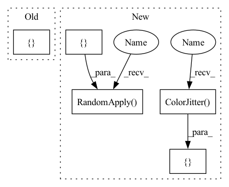

Pattern ID :18390

Before Change
T = [
transforms.RandomHorizontalFlip(p=0.5),
transforms.Compose(
[
get_color_distortion(
brightness=brightness, contrast=contrast, saturation=saturation, hue=hue
),
RandomGaussianBlur(),
]
),
transforms.ToTensor(),
After Change
size_crops = [224, 96]
T = [
transforms.RandomApply(
nn.ModuleList([transforms.ColorJitter(brightness, contrast, saturation, hue)]),
p=0.8,
),
transforms.RandomGrayscale(p=0.2),
transforms.RandomApply(nn.ModuleList([transforms.GaussianBlur(23)]), p=0.5),
transforms.RandomHorizontalFlip(p=0.5),
transforms.ConvertImageDtype(torch.float) if jit_transforms else transforms.ToTensor(),
transforms.Normalize(mean=(0.485, 0.456, 0.406), std=(0.228, 0.224, 0.225)),
In pattern: SUPERPATTERN
Frequency: 3
Non-data size: 5
Instances
Fragment ID: 60156608
Project Name: vturrisi/solo-learn
Commit Name: de6f2f0f996574330fd14f847aaa1b38fcc06b4b
Time: 2021-03-31
Author: vt.turrisi@gmail.com
File Name: utils/contrastive_dataloader.py
M Class Name: AnonimousClass
N Class Name: AnonimousClass
M Method Name: prepare_transformations_multicrop(7)
N Method Name: prepare_transformations_multicrop(7)
M Parent Class:
N Parent Class:
M File Name: utils/contrastive_dataloader.py
N File Name: utils/contrastive_dataloader.py
M Start Line: 187
M End Line: 214
N Start Line: 144
N End Line: 161
'>
Before Change
def train_transforms():
trans_list = [ToTensor()]
return transforms.Compose(trans_list)
After Change
transforms.Resize((height, width)),
transforms.RandomVerticalFlip(p=0.5),
transforms.RandomHorizontalFlip(p=0.5),
transforms.RandomApply([
transforms.RandomAffine(degrees=20,
translate=(0.15, 0.15),
scale=(0.8, 1.2),
shear=5)], p=0.5),
transforms.RandomApply([
transforms.ColorJitter(brightness=0.3, contrast=0.3)], p=0.5),
transforms.ToTensor()
]
return transforms.Compose(trans_list)
'>
Fragment ID: 60156605
Project Name: velebit-ai/covid-next-pytorch
Commit Name: a95ed43a8ae00319255f288656a81b27a1d83d8f
Time: 2020-03-26
Author: bartol.freskura@velebit.ai
File Name: data/transforms.py
M Class Name: AnonimousClass
N Class Name: AnonimousClass
M Method Name: train_transforms(2)
N Method Name: train_transforms(0)
M Parent Class:
N Parent Class:
M File Name: data/transforms.py
N File Name: data/transforms.py
M Start Line: 16
M End Line: 16
N Start Line: 4
N End Line: 17
'>
Before Change
T = [
transforms.RandomHorizontalFlip(p=0.5),
transforms.Compose(
[
get_color_distortion(
brightness=brightness, contrast=contrast, saturation=saturation, hue=hue
),
RandomGaussianBlur(),
]
),
transforms.ToTensor(),
After Change
size_crops = [224, 96]
T = [
transforms.RandomApply(
nn.ModuleList([transforms.ColorJitter(brightness, contrast, saturation, hue)]),
p=0.8,
),
transforms.RandomGrayscale(p=0.2),
transforms.RandomApply(nn.ModuleList([transforms.GaussianBlur(23)]), p=0.5),
transforms.RandomHorizontalFlip(p=0.5),
transforms.ConvertImageDtype(torch.float) if jit_transforms else transforms.ToTensor(),
transforms.Normalize(mean=(0.485, 0.456, 0.406), std=(0.228, 0.224, 0.225)),
'>
Fragment ID: 60156607
Project Name: vturrisi/contrastive-learning
Commit Name: de6f2f0f996574330fd14f847aaa1b38fcc06b4b
Time: 2021-03-31
Author: vt.turrisi@gmail.com
File Name: utils/contrastive_dataloader.py
M Class Name: AnonimousClass
N Class Name: AnonimousClass
M Method Name: prepare_transformations_multicrop(7)
N Method Name: prepare_transformations_multicrop(7)
M Parent Class:
N Parent Class:
M File Name: utils/contrastive_dataloader.py
N File Name: utils/contrastive_dataloader.py
M Start Line: 187
M End Line: 214
N Start Line: 144
N End Line: 161